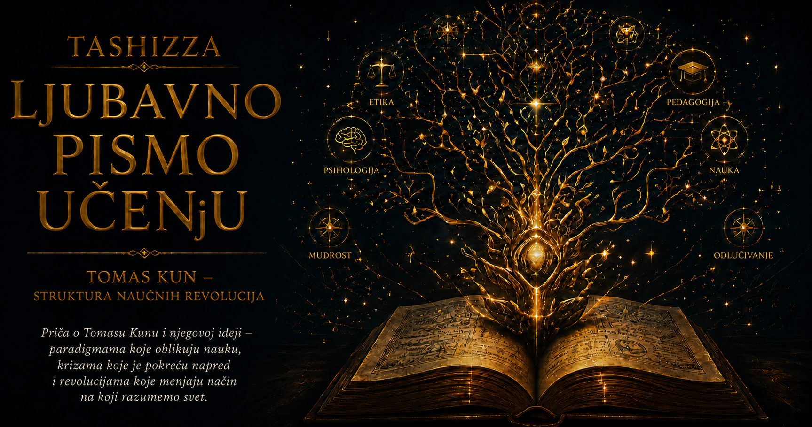

Ljubavno pismo učenju

Nauku često zamišljamo kao građevinu koja raste ravnomerno. Jedna generacija postavi temelje, sledeća doda sprat, a svako novo otkriće zauzme svoje mesto iznad prethodnih. U toj slici greške vremenom otpadaju, činjenice se postepeno umnožavaju, a znanje se približava sve potpunijem opisu sveta. Istorija nauke, međutim, pokazuje trenutke u kojima se nije promenio samo odgovor. Promenili su se pitanje, stručni jezik, merila dobrog objašnjenja i način na koji su istraživači razumeli ono što posmatraju.
Tomas Kun je takve trenutke nazvao naučnim revolucijama. Njegova knjiga Struktura naučnih revolucija, objavljena 1962. godine, promenila je način na koji govorimo o razvoju znanja. Naučni napredak u njoj nije prikazan kao jednostavno dodavanje novih činjenica starim činjenicama. Dugi periodi preciznog i disciplinovanog rada povremeno dovode zajednicu do granica njenog dotadašnjeg pogleda. Tada novi okvir može preurediti poznate rezultate i otvoriti mogućnosti koje u prethodnom sistemu nisu bile vidljive.
Nauku za Kuna ne čine samo teorije zapisane u knjigama. Čine je zajednice istraživača koji prolaze sličnu obuku, koriste priznate instrumente, čitaju iste stručne časopise i dele predstavu o tome koji problemi zaslužuju pažnju. Zajednica svojim članovima prenosi više od skupa tačnih tvrdnji. Uči ih šta treba meriti, koje razlike imaju naučni značaj, kakav postupak deluje pouzdano i po čemu se prepoznaje dobro rešenje.
Za taj zajednički okvir Kun je upotrebio reč paradigma. Njeno značenje bilo je mnogo određenije od popularne upotrebe koju je kasnije stekla. Paradigma obuhvata prihvaćene teorije, modele, vrednosti, načine merenja, instrumente, stručni jezik i uzorne rešene probleme. Ona predstavlja radni svet jedne discipline: mrežu znanja i veština koja velikom broju ljudi omogućava da sarađuju bez neprekidnog vraćanja na svaku početnu pretpostavku.
Mladi fizičar ne postaje fizičar učenjem jedne konačne definicije fizike. On rešava zadatke, posmatra eksperimente, upoređuje svoj postupak sa priznatim rešenjima i postepeno razvija osećaj za strukturu problema. Sličan proces prolaze hemičar, lekar, matematičar, inženjer i programer. Deo stručnog znanja nalazi se u zapisanim pravilima, a deo u sposobnosti da se u novom slučaju prepozna obrazac koji je već upoznat kroz vežbu.
Kun je svakodnevni rad unutar prihvaćene paradigme nazvao normalnom naukom. Taj izraz ne označava osrednju ili beznačajnu nauku. Upravo tokom takvih razdoblja nastaje najveći deo pouzdanog znanja. Istraživači preciznije mere konstante, proveravaju posledice teorija, usavršavaju instrumente, proširuju područje primene poznatih zakona i rešavaju probleme koje je zajednički okvir učinio dostupnim.
Normalna nauka podseća na rešavanje veoma složene slagalice. Istraživač veruje da problem ima rešenje i da ga može pronaći primenom priznatih postupaka. Kada rezultat izostane, najpre proverava sopstveni proračun, uzorak, instrument ili pomoćnu pretpostavku. Ne odbacuje čitavu teoriju pri prvom odstupanju. Takva istrajnost omogućava zajednici da jedan okvir ispita sa preciznošću koja bi bila nedostižna kada bi se njegovi temelji svakodnevno otvarali za raspravu.
Paradigma istovremeno izoštrava pogled i određuje njegov pravac. Obučeni istraživač vidi detalje koji neobučenom posmatraču ništa ne znače, ali njegova pažnja ostaje usmerena prema pojavama koje postojeći okvir smatra važnim. Instrumenti nisu neutralni prozori kroz koje jednostavno ulaze činjenice. Oni su napravljeni da mere određene veličine i odgovore na određena pitanja. Podatak postaje naučno značajan unutar pojmova, postupaka i očekivanja koja mu daju mesto u istraživanju.
Tokom takvog rada pojavljuju se rezultati koji odstupaju od očekivanja. Kun ih je nazivao anomalijama. Svaka razvijena teorija ima pojave koje još ne objašnjava potpuno, merenja koja nisu dovoljno precizna i slučajeve koji se teško uklapaju u postojeći obrazac. Jedna anomalija ne ruši paradigmu. Mnoge teškoće vremenom nestanu zahvaljujući boljim instrumentima, tačnijim proračunima ili proširenju teorije.
Pojedine anomalije opstaju. Mogu zahvatiti središnje područje discipline, povezati se sa drugim teškoćama i dugo odolevati pokušajima rešavanja. Tada se menja njihov položaj. Ono što je ranije izgledalo kao lokalna nepravilnost postaje znak da postojeći okvir možda više ne pruža dovoljno dobar pravac istraživanja. Među naučnicima raste neslaganje, pojavljuju se suparnička objašnjenja, a pitanja koja su dugo bila zatvorena ponovo postaju dopuštena.
Takvo razdoblje Kun je nazivao krizom. Kriza sama ne proizvodi novu nauku. Stari okvir može preživeti ako istraživači pronađu uspešno rešenje, a oblast može dugo ostati podeljena između više pristupa. Naučna revolucija počinje kada se pojavi zamisao sposobna da teškoće rasporedi na drugačiji način, poveže ranije odvojene pojave i otvori plodan program budućih istraživanja.
Kopernikanska revolucija pruža upečatljiv primer. Geocentrična astronomija nije bila zbirka proizvoljnih verovanja. Imala je dugu tradiciju, razvijene matematičke postupke i sposobnost da daje korisna predviđanja položaja nebeskih tela. Kopernikov početni sistem nije odmah bio precizniji u svakom računu. Njegova duboka novina nalazila se u drugačijem rasporedu nebeskih kretanja: Zemlja je postala jedna od planeta, a pojave koje su ranije zahtevale posebne dodatke dobile su novo zajedničko objašnjenje.
Promena se nije završila objavljivanjem Kopernikove knjige. Kepler je uveo eliptične putanje, Galileo je teleskopskim posmatranjima otkrio pojave teško spojive sa starom slikom savršenog neba, a Njutn je zemaljsko i nebesko kretanje obuhvatio zajedničkom mehanikom. Novi okvir dokazivao je snagu tokom više generacija. Revolucionarna zamisao postala je stabilna nauka tek kada je omogućila precizna istraživanja, stvorila nova pitanja i oblikovala obrazovanje budućih astronoma.
Sličan preokret dogodio se u hemiji osamnaestog veka. Pristalice teorije flogistona sagorevanje su razumele kao proces u kojem materija oslobađa posebnu supstancu. Lavoazjeova hemija preuredila je čitavo problemsko polje: promenila je način klasifikovanja supstanci, uvela strožu upotrebu merenja mase i povezala sagorevanje sa kiseonikom. Isti laboratorijski procesi dobili su drugo mesto u mreži objašnjenja. Ono što je za jednu stranu predstavljalo gubitak flogistona, za drugu je postalo sjedinjavanje sa sastojkom vazduha.
Kun je tim primerima pokazao da naučne revolucije zahvataju i značenje osnovnih pojmova. Prostor, vreme i masa nemaju potpuno istu ulogu u Njutnovoj i Ajnštajnovoj fizici. Njutnova mehanika zbog toga nije postala beskorisna. Ona i dalje izuzetno dobro opisuje veliki broj pojava u ograničenom području. Teorija relativnosti odredila je granice tog područja i uključila njegove rezultate u drugačije uređenu sliku fizičkog sveta.
Iz tih promena proistekao je Kunov pojam nesamerljivosti. Suparničke paradigme ne mogu se uvek prevesti jedna u drugu bez gubitka značenja. Njihovi zastupnici mogu drugačije određivati relevantne probleme, različito koristiti iste reči i pridavati različitu težinu istim rezultatima. Nesamerljivost ne prekida svaku mogućnost razgovora i ne izjednačava vrednost svih teorija. Ona pokazuje koliko je poređenje celovitih naučnih okvira složenije od upoređivanja dve izdvojene tvrdnje.
Izbor između teorija ipak ima razloge. Kun je navodio tačnost, doslednost, širinu primene, jednostavnost i plodnost za nova istraživanja kao vrednosti koje naučnici koriste pri proceni. Te vrednosti ne rade poput algoritma. Jedna teorija može bolje odgovarati dotadašnjim merenjima, dok druga uspešnije povezuje udaljene pojave ili obećava otvaranje novog istraživačkog područja. Razumni stručnjaci mogu im dati različitu težinu i u različito vreme prihvatiti novu mogućnost.
Ta tvrdnja izazvala je ozbiljne prigovore. Kritičari su se pitali ostavlja li Kun dovoljno mesta racionalnom poređenju teorija. Karl Poper naglašavao je trajnu potrebu za kritičkim osporavanjem, dok je Kun pokazivao koliko dug rad unutar jednog okvira doprinosi preciznosti nauke. Imre Lakatoš pokušao je da opiše istraživačke programe koji se mogu porediti prema sposobnosti da predviđaju nove činjenice. Te rasprave nisu uklonile Kunovu ideju. Prisilile su filozofiju nauke da mnogo pažljivije objasni šta podrazumeva pod dokazom, racionalnošću i napretkom.
Kun je kasnije precizirao sopstveni rečnik. Širi skup zajedničkih elemenata jedne discipline nazvao je disciplinarnom matricom. U nju je uključio simboličke izraze, modele, vrednosti i egzemplare — uzorne probleme i rešenja kroz koje se stručni način mišljenja praktično usvaja. To pojašnjenje posebno je važno za razumevanje učenja. Znanje se ne prenosi samo definicijama. Učenik kroz primere stiče sposobnost da vidi sličnost koju pre vežbanja nije primećivao.
Udžbenici u tom procesu imaju dvostruku ulogu. Oni čuvaju dostignuća jedne discipline, ali istoriju njenog nastanka često prikazuju kao pravolinijski put prema sadašnjem znanju. Kada revolucija sazri, sporovi, neuspešni pokušaji i nekada razumne alternative povlače se u pozadinu. Novi naraštaj počinje od rezultata prethodne borbe i doživljava ih kao prirodnu polaznu tačku. Zbog toga prošla paradigma naknadno može izgledati toliko slaba da više ne razumemo zašto su je ozbiljni naučnici prihvatali.
Kun je istoričare podstakao da starim teorijama pristupe iz njihovog sopstvenog vremena. Ptolomejevski astronom nije radio sa istim problemima koje današnji čitalac automatski postavlja. Aristotel nije njutnovske zakone poznavao nepotpuno; njegovi pojmovi tela, mesta i kretanja pripadali su drugačije uređenoj prirodi. Razumevanje tog sveta ne zahteva prihvatanje njegovih zaključaka. Zahteva dovoljno strpljenja da se rekonstruiše logika koja je obrazovanim ljudima nekada omogućavala da u njemu vide red.
Takav pristup donosi važnu intelektualnu skromnost. Naše znanje počiva na izuzetno uspešnim teorijama, javnim proverama, preciznim merenjima i stručnoj kritici. Istovremeno, pitanja koja postavljamo i razlike koje primećujemo oblikovani su istorijom naših disciplina. Budući istraživači mogu sačuvati veliki deo naših rezultata, a ipak ih rasporediti unutar pojmovnog sistema koji danas još ne možemo jasno zamisliti.
Izraz „promena paradigme” vremenom je postao oznaka za gotovo svaku novinu. Poslovna reorganizacija, nova aplikacija ili promena lične navike često se predstavljaju kao revolucija. Kunov pojam zahteva mnogo više. Duboka promena zahvata zajedničke probleme, stručni jezik, priznate metode, uzorna rešenja i merila uspeha čitave istraživačke zajednice. Njena veličina ne dokazuje se početnim uzbuđenjem, nego dugoročnom sposobnošću da proizvodi znanje.
Jednako je važno da svako odstupanje ne najavljuje rušenje postojećeg sistema. Naučne zajednice opravdano štite teorije koje su dugo davale pouzdane rezultate. Neočekivan nalaz može poticati od greške, nedovoljnog uzorka, ograničenja instrumenta ili još nepoznatog uticaja. Revolucionarna promena postaje ozbiljna tek kada se anomalije pokažu trajnim, a novi okvir pruži uverljiviji način objašnjavanja, istraživanja i obrazovanja novih stručnjaka.
Stvarna istorija nauke često je nepravilnija od urednog niza normalne nauke, anomalije, krize i revolucije. Više teorijskih tradicija može dugo postojati paralelno. Pojmovi se ponekad menjaju postepeno, bez jednog dramatičnog preloma. Neke discipline nikada ne uspostave saglasnost koja bi odgovarala jednoj dominantnoj paradigmi. Kunov model zato najbolje služi kao način pažljivog posmatranja razvoja znanja, a ne kao raspored kroz koji svaka nauka mora proći istim redom.
Njegova ideja posebno je značajna za obrazovanje. Učenje koje učeniku pruža samo gotove rezultate skriva procese kroz koje je znanje postalo pouzdano. Razumevanje raste kada upoznamo pitanja, greške, merenja, sporove i promene pojmova koji su prethodili današnjem odgovoru. Tada formula prestaje da bude zapis koji treba zapamtiti i postaje sažetak dugog ljudskog nastojanja da se u prirodi prepozna red.
Kunovo delo pomaže i da razlikujemo autoritet znanja od autoritarnog zahteva za poslušnošću. Naučni autoritet ne počiva na glasnoći, položaju ili nepogrešivosti pojedinca. Njegovu snagu stvaraju javni postupci, proverljivi rezultati, obrazložena kritika i spremnost zajednice da vremenom koriguje sopstvene zaključke. Paradigma usmerava rad, ali nijednom okviru ne daje večito pravo da odlučuje šta će stvarnost pokazati.
Naučne revolucije nastaju na osetljivoj granici između poverenja i sumnje. Istraživačima je potrebno dovoljno poverenja da godinama razvijaju postojeću teoriju, dovoljno poštenja da priznaju njene uporne teškoće i dovoljno mašte da poznate pojave pokušaju da povežu drugačije. Nova ideja zatim mora preživeti proveru, omogućiti rad drugih ljudi i dokazati da oko nje može nastati plodna istraživačka praksa.
Najdublja vrednost Kunove misli nalazi se u upozorenju da granice sopstvenog pogleda najteže primećujemo upravo onda kada nam taj pogled uspešno služi. Čovek može posedovati mnogo znanja, dosledno primenjivati priznata pravila i ipak ostati zatvoren unutar pitanja koja njegov sistem ume da postavi. Učenje zato zahteva više od prikupljanja tačnih odgovora. Zahteva sposobnost da ponekad zastanemo i ispitamo okvir koji određuje šta uopšte prepoznajemo kao pitanje.
Nauka napreduje jer čuva rezultate koji su izdržali proveru, ali i zato što nijedan način gledanja ne proglašava poslednjim. Isti svet može otkriti nove odnose kada se promene pojmovi kojima ga istražujemo. U trenutku naučne revolucije priroda ostaje pred nama, dok se preuređuju pitanja, značenja i merila kojima joj prilazimo. Tada shvatamo da nismo menjali samo odgovor. Naučili smo da vidimo ono za šta u prethodnom okviru nismo imali oči.